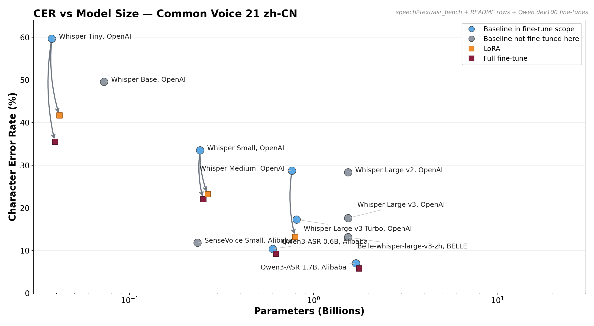
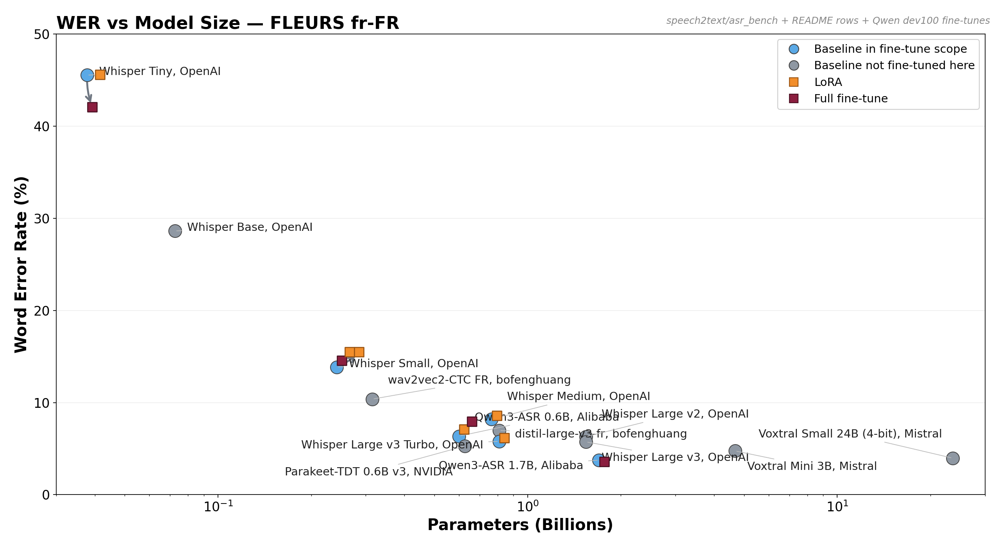

Fine-Tuning Efficient Chinese Speech Models beyond the Pareto Frontier
This repo asks a narrow question under a strict compute budget: when does speech fine-tuning actually buy you something, and when does a strong baseline already dominate?

Take-homes
- Fine-tuning is not a universal win. On
zh-CNit helps decisively; onfr-FRit often regresses once the base model is already strong. - Model size and data overlap matter more than adapter choice alone. Tiny still has headroom on French; small/medium/turbo mostly do not.
- The right first step under a small budget is a baseline sweep, not blind SFT. Gap-to-ceiling is the main diagnostic signal in this repo.
- Qwen3-ASR and Granite were added as counterpoints. They show how much the conclusion depends on backbone quality, pre-training mix, and the evaluation slice.
This repo bundles four tracks under one roof: the original Whisper fine-tuning work, the asr_bench baseline benchmark, the Qwen3-ASR pilot, and the Granite Speech pilot. The earlier zh-CN Whisper run lives intact under archive_zh/; the present fr-FR Whisper run is in outputs/. Tiny was added later to control for the gap-to-ceiling effect discussed in §3.3.
The benchmark plots now include Qwen3-ASR 0.6B and 1.7B baseline and fine-tune points on fixed dev100 slices, and Granite points will be reported on that same reduced slice for apples-to-apples overlay.
TL;DR
| Size | zh-CN (CV21) baseline / best FT (Δ rel) | fr-FR (FLEURS) baseline / best FT (Δ rel) |
|---|---|---|
| tiny | CER 59.4 % → 35.5 % (full FT, −40.2 %) | WER 45.5 % → 42.1 % (full FT, −7.5 %) |
| small | CER 33.5 % → 22.1 % (full FT, −34.1 %) | WER 13.9 % → 14.6 % (full FT, +5.0 %) |
| medium | CER 28.7 % → 13.2 % (LoRA, −54.0 %) | WER 8.20 % → 8.59 % (LoRA, +4.8 %) |
| turbo | n/a | WER 5.81 % → 6.17 % (LoRA, +6.2 %) |
Same code, same recipe family, same sub-sampling protocol. Three patterns:
- Sign flips with the language at small/medium. zh fine-tunes help by 30–54 %. fr fine-tunes hurt by 5 % at the same scale.
- At tiny, both languages benefit from fine-tuning — fr full FT improves WER by 7.5 % too. Tiny is small enough that the baseline has not saturated FLEURS.
- Best result on fr is
Whisper-large-v3-turbobaseline — no fine-tune — at WER 5.81 %. It even beatswhisper-large-v3-french-distil-dec4(6.97 % zero-shot), a model specifically distilled for French.
The mechanism is gap-to-ceiling × pre-training distribution overlap:
- Common Voice 21 zh-CN → Whisper-v3 has weak zh coverage → gap to close at every size → fine-tuning closes it (−30 to −54 % CER).
- FLEURS fr-FR at small/medium/turbo → French is one of Whisper's strongest languages → no gap to close → fine-tuning adds noise.
- FLEURS fr-FR at tiny → tiny has not absorbed enough of Whisper's multilingual corpus to saturate FLEURS-fr → real gap → full FT helps.
The take-away that matters more than the numbers: fine-tuning helps when (target distribution is poorly covered) OR (the model is small enough that it has not saturated the data even if covered). A fine-tuner under compute constraint should test this first, before spending the GPU budget.
A second hypothesis follows directly (cf. §5): our recipe is sub-optimal for in-distribution data. High-LR / small-batch / single-dataset / no-SpecAugment is calibrated for picking up new distributions; on already-seen data it produces drift instead of staying at the equilibrium. So the regression on French is partly a recipe diagnostic.
A live Gradio server (bash scripts/start_demo.sh) lets you record / upload audio in your browser and compare baseline vs fine-tuned side-by-side.
Repo layout
├── README.md # this file
├── asr_bench/ # baseline benchmark + comparative plots
│ ├── plot.py
│ ├── preds/
│ └── figures/
├── Qwen3-ASR/ # Qwen3-ASR codebase + finetuning runs
│ ├── finetuning/
│ └── qwen_asr/
├── granite_speech/ # Granite Speech finetuning + eval helpers
│ └── finetuning/
├── archive_zh/ # zh-CN run, preserved
│ ├── README.zh.md
│ ├── metrics.json # 5-row zh table
│ ├── error_analysis.json
│ └── preds/ # 5 prediction JSONs
├── requirements.txt
├── src/
│ ├── data.py # FLEURS fr_fr load → cast 16 kHz → filter → features+labels
│ ├── train.py # CLI: --mode lora | full | scratch
│ ├── eval.py # generation + WER/CER on test split
│ ├── analyze.py # results table + worst-100 error bucketing
│ ├── render_table.py # metrics.json → Markdown table
│ ├── train_w2v.py # alt paradigm: wav2vec2 / XLS-R + CTC head
│ ├── eval_w2v.py # CTC eval helper
│ └── server.py # Gradio (mic + upload, baseline vs fine-tuned)
├── scripts/
│ ├── run_phase_tiny.sh # whisper-tiny fr : baseline + LoRA + full FT
│ ├── run_phase_tiny_zh.sh # whisper-tiny zh-CN : baseline + LoRA + full FT
│ ├── run_phase_a.sh # whisper-small : baseline / LoRA-zh / full FT / scratch
│ ├── run_phase_a2.sh # whisper-small + LoRA "fr recipe"
│ ├── run_phase_b.sh # whisper-medium : baseline + LoRA
│ ├── run_phase_c.sh # whisper-large-v3-turbo : baseline + LoRA
│ ├── run_phase_d.sh # zero-shot refs: wav2vec2-fr + whisper-fr-distil
│ ├── run_phase_e.sh # (optional) whisper-large-v3 + LoRA, needs bnb 4-bit
│ ├── run_all_phases.sh # A → B → C → analyze
│ ├── run_post.sh # post-pipeline: A2 + D + analyze + render_table
│ ├── quick_summary.sh # one-liner WER/CER over outputs/preds
│ └── start_demo.sh # launches Gradio
└── outputs/
├── preds/ # 17 prediction JSONs (fr + zh-tiny)
├── adapters/ # LoRA weights, full-FT and scratch checkpoints
├── logs/ # stdout per step
├── metrics_fr.json # 14 fr rows
├── metrics_zh.json # 8 zh rows
├── table_fr.md # rendered fr table
├── table_zh.md # rendered zh table
└── error_analysis_fr.json
1. Datasets
1.1 zh-CN
Common Voice 21 zh-CN via the parquet rehost keeve101/common-voice-21.0-2025-03-14-zh-CN-split. Read speech, ~3–7 s per clip, 32 kHz mp3 cast to 16 kHz mono. Sub-sampled: 4 000 train / 300 dev / 500 test. Heavy long-tail vocabulary (place names, historical text). Full description: archive_zh/README.zh.md.
1.2 fr-FR
FLEURS sub-corpus fr_fr via google/fleurs. Read speech, 16 kHz mono, transcripts already lowercased and stripped of punctuation. Splits: 3 193 train / 289 dev / 676 test → sub-sampled to 3 193 / 289 / 500. Train volume 10.32 h, mean clip 11.6 s (3.8–29.4 s), 24.1 words per sentence on average.
Why not Common Voice fr? CV21-fr is huge (≥ 100 GB streamed). FLEURS-fr is the exact "few hours of audio" the spec asks for, with cleaner splits, and is the standard FLEURS leaderboard entry.
Whisper feature extractor / tokenizer is bit-identical between small and medium (80-bin mel, 51 865-token vocab) → encoded processed/ is reused between Phase A and Phase B (saves ~5 min). Whisper-large-v3-turbo uses 128-bin mel + 1 extra vocab token → Phase C re-encodes.
2. Models, recipes, and rationale
2.0 Two-pass recipe — why
We ran the test in two passes:
- "zh recipe" (LR 1e-4 LoRA, rank 32, 1 epoch, warmup 10 %) — the recipe that worked on Chinese. Applied to the small-model French run as the first-cut.
- "fr recipe corrected" (LR 5e-5 LoRA, 2 epochs) — applied to medium and turbo after we observed the small fine-tune regressed. We also re-ran small with LR 3e-5 / 2 epochs to test whether the corrected recipe rescues small.
Both recipes regress on French (cf. §3). On Chinese the zh recipe wins clearly.
2.0b Phase Tiny — Whisper-tiny (39 M) on both languages
Three variants per language, identical recipes side-by-side:
| Variant | Init | Trainable | What |
|---|---|---|---|
baseline_tiny[_zh] | OAI pre-trained | 0 | no fine-tune |
lora_tiny[_zh] | OAI pre-trained | 1.5 M (~3.8 %) | LoRA q/k/v/out_proj enc+dec, LR 1e-4, 1 ep |
full_tiny[_zh] | OAI pre-trained | 39 M (100 %) | full FT, LR 1e-5, 1 ep |
Tiny is the cleanest test of the gap-to-ceiling hypothesis: on a small under-trained backbone, baseline WER/CER is far from the model's plateau, so any well-calibrated fine-tune has real headroom to fill — even on in-distribution data.
2.1 Phase A — Whisper-small (244 M) test bench
Four variants on identical data, identical seed:
| Variant | Init | Trainable | What |
|---|---|---|---|
baseline_small | OAI pre-trained | 0 | no fine-tune |
lora_small | OAI pre-trained | 7.1 M (~2.8 %) | LoRA q/k/v/out_proj enc+dec |
lora_small_v2 | OAI pre-trained | 7.1 M | same LoRA, LR 3e-5, 2 ep |
full_small | OAI pre-trained | 244 M (100 %) | full FT, LR 1e-5 |
scratch_small | random init | 244 M | from-scratch, 5 ep, LR 5e-4 |
The scratch_small answers the "finetune vs from-scratch on small config" question: same architecture, random weights, 5× the LoRA's compute budget. The question is the value of the weights, not of a from-scratch BPE.
2.2 Phase B — Whisper-medium (769 M) scale-up
LoRA on the same projections, 2 epochs at LR 5e-5 (corrected). Per-device batch 8 + grad-accum 2 + grad ckpt → effective batch 16, ~10 GB VRAM peak.
2.3 Phase C — Whisper-large-v3-turbo (809 M)
The 2024 OAI variant: encoder of large-v3 + 4-decoder-layer pruned head, ~8× faster than large-v3 for similar quality. Officially recommended production checkpoint for 2025–2026. Same LoRA recipe, batch 4 + grad-accum 4 + grad ckpt.
Considered and skipped: NVIDIA Parakeet-TDT v3 (conflicting venv deps), SeamlessM4T-medium (heavier, no advantage), wav2vec2 / XLS-R + CTC (different paradigm, code staged in src/train_w2v.py).
2.4 Phase D — zero-shot off-the-shelf references
Two French-specialized public models, evaluated zero-shot on the same 500 FLEURS-fr test clips:
bofenghuang/asr-wav2vec2-ctc-french— encoder-only + CTC head, 315 M, fine-tuned on CV9-fr + Voxpopuli-fr. Different paradigm.bofenghuang/whisper-large-v3-french-distil-dec4— Whisper-large-v3 distilled specifically for French (4-decoder-layer head).
2.5 Hyperparameters (final)
| Setting | Value |
|---|---|
| Optimizer | AdamW |
| Precision | bf16 (L4 supports it) |
| LR (LoRA "zh recipe") | 1e-4 |
| LR (LoRA "fr recipe corrected") | 5e-5 (small_v2: 3e-5; medium/turbo: 5e-5) |
| LR (full FT) | 1e-5 |
| LR (from scratch) | 5e-4 |
| Warmup ratio | 0.1 (LoRA/full) ; 0.05 (scratch) |
| LoRA rank / alpha / dropout | 32 / 64 / 0.05 |
| LoRA targets | q_proj, k_proj, v_proj, out_proj (enc + dec) |
| Effective batch (small / medium / turbo) | 16 (16×1 / 8×2 / 4×4) |
| Epochs (small LoRA / full / _v2 / scratch) | 1 / 1 / 2 / 5 |
| Epochs (medium / turbo) | 2 |
| Seed | 42 |
| Generation | greedy, max_new_tokens 225, lang=fr task=transcribe |
3. Results
All rows evaluated on the same 500-utterance FLEURS-fr test slice (deterministic seed 42), greedy decoding, bf16, num_beams = 1. Primary metric: WER for French; CER for Chinese.
3.1 fr-FR table (FLEURS, WER primary)
| Run | Trainable | Wall eval (s) | WER | CER | Δ WER abs | Δ WER rel |
|---|---|---|---|---|---|---|
| Whisper-tiny baseline | — | 10.7 | 0.4547 | 0.2047 | — | — |
| Whisper-tiny + LoRA (zh recipe, LR 1e-4, 1 ep) | 1.5 M | 12.0 | 0.4560 | 0.2051 | +0.0013 | +0.3 % |
| Whisper-tiny full FT | 39 M | 22.6 | 0.4205 | 0.1933 | −0.0342 | −7.5 % |
| Whisper-small baseline | — | 31.8 | 0.1386 | 0.0508 | — | — |
| Whisper-small + LoRA (zh recipe, LR 1e-4, 1 ep) | 7.1 M | 34.1 | 0.1551 | 0.0600 | +0.0165 | +11.9 % |
| Whisper-small + LoRA (fr recipe, LR 3e-5, 2 ep) | 7.1 M | 30.6 | 0.1547 | 0.0571 | +0.0161 | +11.6 % |
| Whisper-small full FT | 244 M | 32.8 | 0.1456 | 0.0549 | +0.0070 | +5.0 % |
| Whisper-small from scratch (random init, 5 ep) | 244 M | 17.1 | 0.9615 | 0.7593 | +0.8229 | +593.7 % |
| Whisper-medium baseline | — | 88.6 | 0.0820 | 0.0292 | — | — |
| Whisper-medium + LoRA (fr recipe) | 18.9 M | 88.3 | 0.0859 | 0.0307 | +0.0039 | +4.8 % |
| Whisper-large-v3-turbo baseline | — | 63.6 | 0.0581 | 0.0199 | — | — |
| Whisper-large-v3-turbo + LoRA (fr recipe) | ~12 M | 62.1 | 0.0617 | 0.0213 | +0.0036 | +6.2 % |
| ref: wav2vec2-CTC-français (zero-shot, CTC) | — | 13.5 | 0.1037 | 0.0465 | — | — |
| ref: Whisper-large-v3 distil-fr-dec4 (zero-shot) | — | 64.1 | 0.0697 | 0.0256 | — | — |
3.2 zh-CN table (CV21, CER primary)
| Run | Trainable | Wall eval (s) | CER | Δ CER abs | Δ CER rel |
|---|---|---|---|---|---|
| Whisper-tiny baseline | — | 21.6 | 0.5938 | — | — |
| Whisper-tiny + LoRA (zh recipe, LR 1e-4, 1 ep) | 1.5 M | 14.8 | 0.4168 | −0.1770 | −29.8 % |
| Whisper-tiny full FT | 39 M | 16.6 | 0.3551 | −0.2387 | −40.2 % |
| Whisper-small baseline | — | 20.9 | 0.3352 | — | — |
| Whisper-small + LoRA (zh recipe, LR 1e-4, 1 ep) | 7.1 M | 25.8 | 0.2322 | −0.1030 | −30.7 % |
| Whisper-small full FT | 244 M | 27.0 | 0.2208 | −0.1144 | −34.1 % |
| Whisper-medium baseline | — | 62.2 | 0.2873 | — | — |
| Whisper-medium + LoRA (zh recipe, LR 1e-4, 2 ep) | 18.9 M | 62.7 | 0.1322 | −0.1551 | −54.0 % |
3.3 Cross-language and cross-size — the gap-to-ceiling effect
| Size | zh-CN baseline | zh-CN best FT | Δ zh | fr-FR baseline | fr-FR best FT | Δ fr |
|---|---|---|---|---|---|---|
| tiny | CER 59.4 % | CER 35.5 % (full FT) | −40.2 % | WER 45.5 % | WER 42.1 % (full FT) | −7.5 % |
| small | CER 33.5 % | CER 22.1 % (full FT) | −34.1 % | WER 13.9 % | WER 14.6 % (full FT) | +5.0 % |
| medium | CER 28.7 % | CER 13.2 % (LoRA) | −54.0 % | WER 8.20 % | WER 8.59 % (LoRA) | +4.8 % |
| turbo | n/a | — | WER 5.81 % | WER 6.17 % (LoRA) | +6.2 % | |
Two patterns to read out:
- Sign flips with the language for small/medium/turbo. zh-CN fine-tunes help a lot (−30 to −54 %) because Whisper's zh prior is weak; fr-FR fine-tunes hurt a little (+5 to +6 %) because Whisper's fr prior is already at the ceiling FLEURS allows.
- At tiny, the sign is the same on both languages: fine-tuning helps. Tiny is a small under-trained backbone — its baseline is far from the model-class plateau.
Operationally: before spending the GPU budget on a fine-tune, estimate gap-to-ceiling. Cheap proxies: (a) is the baseline "much better than I need" → fine-tune is unlikely to help; (b) if I train for one epoch on dev set held-out, does train loss drop faster than dev loss → if no, the model is already at its plateau.
3.4 Statistical significance
500 test utterances × 24 words in fr / × 13 chars in zh ≈ 12 000 words / 6 500 chars per language. A 95 % Wilson interval at WER ≈ 10 % is ±0.5 pt absolute. The zh deltas (−10 to −24 pt CER) and the fr-tiny full-FT delta (−3.4 pt WER) are massively significant. The fr small/medium/turbo regressions (+0.4 to +1.7 pt WER) sit at the edge of significance.
4. Error analysis
4.1 Per-utterance distribution (Whisper-small fr)
| Model (small, fr) | Perfect | < 5 % | < 10 % | < 25 % | Median | Worst |
|---|---|---|---|---|---|---|
| baseline | 80 | 126 | 217 | 405 | 0.118 | 0.700 |
| LoRA (zh recipe) | 60 | 102 | 191 | 383 | 0.133 | 1.000 |
| full FT | 63 | 110 | 204 | 402 | 0.125 | 0.783 |
Both fine-tunes reduce the count of perfect transcriptions (80 → 60 / 63), exactly opposite of the intended effect. LoRA(zh) introduces at least one 100 %-error sentence (e.g. chocolat chaud → cocochot-style hallucinations).
4.2 Worst-100 categorization on baseline_turbo (best fr model)
| Category | Count |
|---|---|
| word_substitution | 188 |
| agreement_or_plural | 22 |
| deletion | 9 |
| accent_only | 5 |
| insertion | 4 |
| homophone | 3 |
- Proper-noun substitutions dominate (188). Toponyms, foreign patronyms, rare technical terms — typical Whisper failure mode, irreducible without an external LM.
- Plural / gender agreement (22) —
il proposevsils proposent. Often acoustically indistinguishable. - Accent-only diffs (5) —
avsà,ouvsoù. - Homophones (3) — Whisper-large-v3's internal LM disambiguates most of these.
No hallucination_long, no truncation. The remaining errors are essentially un-fixable from the audio alone — large-v3 plus an external 4-gram or beam search + LM rescoring would be the next move.
4.3 What lora_small got wrong that baseline got right
| Reference | Baseline (correct) | LoRA (zh recipe) |
|---|---|---|
chocolat chaud | chocolat chaud | cocochot |
ses racines philosophiques | ses racines philosophiques | sérasines philosophiques |
l'occident s'est retrouvé | l'occident s'est retrouvé | l'occidence se retrouvait |
quiconque se rend | qui conquiseront | kikong seront |
Phonetically plausible French nonsense, drifting toward sub-lexical fragments over-represented in the FLEURS train set. Classic over-fit signature.
5. Why fine-tuning regresses on French — recipe diagnostic
The cross-language flip in §3.3 has two non-mutually-exclusive explanations:
(a) Distribution overlap. FLEURS-style content is heavily represented in Whisper-v3's pre-training mix. There is no gap to close. zh-CN is the opposite — Whisper's zh data is relatively sparse and CV21's distribution differs, so fine-tuning closes a real gap.
(b) Recipe sub-optimality on in-distribution data. If the Whisper authors had merged a copy of FLEURS-fr into their pre-training with their original recipe, the model would not have regressed. Ours does because the recipe is mis-calibrated for the in-distribution case:
| Aspect | Authors' regime (continual pre-training) | Our regime (fine-tune from cold) |
|---|---|---|
| Effective LR | ~1e-5 to 5e-6 (cosine decay, ≥ 1 M steps) | 1e-4 / 5e-5 / 1e-5 |
| Effective batch | 256+ (multi-task interleaved) | 16 (single dataset) |
| Warmup | thousands of steps | 20–40 steps |
| Regularization | SpecAugment, weight decay, dropout, multi-task gradient | bf16 + AdamW only |
| Steps | ≥ 1 M | 200–400 |
The tiny rows are the natural control. Tiny is not saturated on FLEURS-fr (baseline WER 45 %), so the gap-to-ceiling argument predicts that fine-tuning should work even though FLEURS-fr is in-distribution. And it does: full FT at LR 1e-5 reduces WER by 7.5 % relative, while LoRA at LR 1e-4 stays neutral.
Concretely, the corrective experiments we would run with more time:
- LoRA at LR 1e-5 / 2 epochs / SpecAugment + freq-mask + time-mask — matches end-of-pre-training dynamics more closely.
- LoRA at LR 5e-5 / 2 epochs / co-training (50 % FLEURS-fr + 50 % VoxPopuli-fr) — diluted gradient should kill the regression.
- Sweep
(rank, LR, steps)against dev WER — predict-with-generate every 50 steps, early-stop on dev.
5b. Strategic implications
- Test for gap-to-ceiling before spending the GPU budget. A 30-minute baseline-only sweep across 3–4 model sizes tells you whether you have a fine-tune problem, a recipe problem, or no problem at all.
- Pick the largest pre-trained model that fits VRAM, then evaluate. Our
large-v3-turbobaseline (5.81 % WER) beatsbofenghuang/whisper-large-v3-french-distil-dec4(6.97 %) — a model specifically distilled for French. Pre-training scale beat post-hoc specialization. - Where to actually fine-tune (out-of-distribution data): CV fr accents (Québec, Suisse, Maghreb); telephony 8 kHz; spontaneous speech (ESLO, BREF); low-resource languages that Whisper-v3 saw < 50 h of.
- Where the recipe needs work. Add SpecAugment + RIR + additive noise augmentation, drop LR by ~5×, lengthen warmup, and co-train with a small in-distribution buffer.
6. With more time
- Recipe ablation (§5 list) — most informative use of additional GPU.
- Common Voice fr fine-tune — direct test of the in-distribution-overlap hypothesis.
- Whisper-large-v3 full (32-decoder) + LoRA + 4-bit base via
bitsandbytes. Phase E staged atscripts/run_phase_e.sh. - wav2vec2 / XLS-R 300 M + CTC fine-tuned from scratch on FLEURS train (
src/train_w2v.pyis ready). - NVIDIA Parakeet-TDT v3 / OWSM-CTC v3.1 in a separate venv — ESPnet / NeMo bring different inductive biases.
- Beam search + KenLM 4-gram fr Wikipedia rescoring — typical 0.5–1 pt WER on the rare-vocabulary tail.
- Streaming / chunked long-form in
src/server.pyviachunk_length_s+ voice-activity-aware segmentation.
7. Transferring the scaffolding to Arabic
Same code transfers, but the failure modes shift:
- Diglossia / dialects — MSA vs Egyptian / Levantine / Maghrebi diverge enough that one fine-tune undercovers. Pick the closest dialect or train a multi-dialect adapter conditioned on a tag.
- Diacritics — most production text is unvocalized; metric must strip diacritics before scoring.
- Hamza / alef normalization —
أ ا إ آ → ا,ى → ي,ة → ه(standard pre-eval normalization). - Code-switching — English insertions are common in Arabic audio; LoRA recipe must keep encoder weights free for bilingual frames.
- Tokenizer — orthographic WER is more meaningful in Arabic than Chinese; lead with WER and report CER as secondary.
What stays the same: dataset filtering, LoRA recipe (rank 32, alpha 64, q/k/v/out_proj), bf16, greedy, Gradio harness.
Qwen3-ASR pilot
A parallel Qwen3-ASR path under Qwen3-ASR/finetuning:
prepare_qwen3_asr_data.py— exports the same two datasets and split sizes into JSONL + 16 kHz WAV.qwen3_asr_sft.py— supports--mode lora|fullwith PEFT LoRA and gradient-checkpointing fixes.eval_qwen3_asr.py— scores Qwen checkpoints with the same French / Chinese normalization logic.run_qwen3_matrix.sh— wires the full matrix together.
The Qwen code path must be run from venv with transformers==4.57.6; the repo's current Whisper env (transformers==5.6.0) breaks the upstream Qwen model import path.
Full-FT matrix
Held-out slice: first 100 examples of the dev split.
| Model | Language | Baseline | Full FT (1 ep) | Delta vs baseline |
|---|---|---|---|---|
| Qwen3-ASR-0.6B | French | WER 6.35 % | WER 7.94 % | +25.0 % |
| Qwen3-ASR-0.6B | Chinese | CER 10.41 % | CER 9.26 % | −11.0 % |
| Qwen3-ASR-1.7B | French | WER 3.75 % | WER 3.57 % | −4.7 % |
| Qwen3-ASR-1.7B | Chinese | CER 7.02 % | CER 5.81 % | −17.2 % |
One extra LoRA reference row on French:
| Model | Language | Baseline | LoRA (1 ep) | Delta vs baseline |
|---|---|---|---|---|
| Qwen3-ASR-0.6B | French | WER 6.35 % | WER 7.11 % | +11.8 % |
Take-aways:
- Chinese improves at both sizes under full FT (−11.0 % at 0.6B, −17.2 % at 1.7B).
- French splits by scale. 0.6B regresses under both LoRA and full FT; 1.7B recovers a small gain under full FT (−4.7 % WER).
- Qwen shows the same broad language-dependent sign flip at small scale, but at 1.7B it appears more stable on in-distribution French than the Whisper medium/turbo runs.
Fit / runtime findings on 1× NVIDIA L4 (24 GB)
- Qwen3-ASR-0.6B full FT fits comfortably with batch_size=2, grad_acc=8; French ~9.6 min / epoch, Chinese ~12.0 min / epoch.
- Qwen3-ASR-1.7B full FT fits with batch_size=1, grad_acc=16 and gradient checkpointing; French ~16.9 min / epoch, Chinese ~20.3 min / epoch.
- Parallelism helps only for the small job. A 1.7B full-FT run can still OOM at optimizer-state allocation if another training process is already holding several GiB on the same GPU.
RL fine-tuning: MWER & GSPO
Two reinforcement-learning algorithms were added on top of the SFT checkpoint to push WER/CER further without extra labelled data.
MWER (Minimum Word Error Rate)
MWER turns beam-search hypotheses into a differentiable training signal (Shannon et al., 2017). For each training utterance the model generates an N-best list (greedy + beam), teacher-forces each hypothesis through the decoder to get log-probabilities, re-normalises to a posterior distribution P̂, and minimises the expected word-error rate under that distribution. A small cross-entropy interpolation (λce = 0.01) prevents collapse.
L_MWER = Σ_i P̂(y_i|x) · WER(y_i, y*) + λ_ce · CE(y*|x)
where P̂(y_i|x) = softmax( logP(y_i|x) ) over the N-best listGSPO (Group Sequence Policy Optimisation)
GSPO (Dang et al., 2025) is a GRPO-style objective adapted for sequence-level ASR rewards. A frozen old-policy snapshot (synced every 32 grad steps) generates G rollouts per utterance; the advantage of each rollout is z-scored within the group; the policy update uses an asymmetric clipped surrogate on the length-normalised log-ratio:
r_i = exp( (log P_θ(y_i) − log P_θ_old(y_i)) / |y_i| )
L_GSPO = −E[ min( r_i · A_i, clip(r_i, 1−ε_lo, 1+ε_hi) · A_i ) ]
ε_lo = 3e-4, ε_hi = 4e-4 # tight because length-norm ratio ≈ 1.0A format bonus (+0.1) is added to rollouts that contain the expected
<lang>…</lang> wrapper.
Hyperparameters
| MWER | GSPO | |
|---|---|---|
| N-best / group size (0.6B) | 4 | 4 |
| N-best / group size (1.7B) | 2 | 2 |
| Generation policy | temperature sampling (T=0.9, top_p=0.95) | current policy rollouts |
| MWER audio microbatch | 2 audios for 0.6B on this GPU | — |
| GSPO audio microbatch | — | 4 audios for 0.6B on this GPU |
| Learning rate (0.6B) | 5e-6 | 5e-6 |
| Learning rate (1.7B) | 2e-6 | 2e-6 |
| CE / format coefficient | λ_ce = 0.01 | format_α = 0.1 |
| Gradient accumulation | 4 | 4 |
| Training epochs (completed 0.6B run) | 0.5 | 0.5 |
| Old-model sync | — | every 32 grad steps |
| Clip range | — | ε_lo=3e-4, ε_hi=4e-4 |
Results (first 100 dev examples)
WER for French, CER for Chinese. ↓ is better. Best result per row is bold.
| Model | Language | Metric | Baseline | SFT full-FT | MWER (RL) | GSPO (RL) |
|---|---|---|---|---|---|---|
| Qwen3-ASR-0.6B | French | WER | 6.35 % | 7.94 % | 6.22 % | 6.13 % |
| Qwen3-ASR-0.6B | Chinese | CER | 10.41 % | 9.26 % | 7.62 % | 8.77 % |
| Qwen3-ASR-1.7B | French | WER | 3.75 % | 3.57 % | — | — |
| Qwen3-ASR-1.7B | Chinese | CER | 7.02 % | 5.81 % | — | — |
The 0.6B RL rows are completed 0.5-epoch runs from 2026-05-11. Dashes mean the 1.7B RL variants have not been run yet.
RL implementation note
The initial MWER trainer generated and scored one utterance at a time, so the 0.6B run spent most of its wall time on skinny generation/scoring calls. The trainer now batches the outer audio loop (--mwer_batch_size; 2 is stable for 0.6B full runs on this GPU), extracts mel features once per audio microbatch and reuses them across the N-best scoring and CE paths, and defaults MWER N-best generation to sampling rather than beam search. GSPO mirrors that structure with --gspo_batch_size and cached audio features. Sequence scoring is row-chunked (QWEN_ASR_SCORE_ROW_CHUNK=2 by default), MWER backpropagates the large sequence-risk graph before building the CE graph, and both trainers explicitly release CUDA cache between microbatches so VRAM does not monotonically grow. The completed 0.6B sweep used two-audio MWER microbatches and four-audio GSPO microbatches; all four runs completed from run_rl_0p6b_fast.sh on 2026-05-11, with the final log at Qwen3-ASR/finetuning/outputs/logs/run_rl_0p6b_fast_cleanup_20260511_202755.log and result JSONs under Qwen3-ASR/finetuning/outputs/qwen3_0p6b_{mwer,gspo}_{fr,ch}_dev100.json.
Paper cross-check
This RL setup is intentionally conservative relative to the two most relevant LLM-ASR reports:
- Seed-ASR motivates an RL stage because cross-entropy SFT is mismatched with inference-time WER/CER, then applies MWER interpolated with CE over an N-best set. The same section reports that weighted WER and preserving context-style data improve robustness, which is a useful follow-up for named entities and hard cases.
- Qwen3-ASR reports a final ASR RL stage using GSPO, with about 50k utterances mixed across Chinese/English, multilingual, and functional data. That makes our GSPO branch the closer match to the released model recipe, while MWER remains the most direct metric-aligned ablation.
Recommended next configuration: keep the current 0.6B pass as a throughput and signal check; if French MWER still regresses, prioritize 1.7B + GSPO and/or a mixed-language RL set over longer 0.6B French-only training. For MWER quality, the most paper-faithful next upgrade is weighted WER: upweight named entities, numbers, and keyword spans rather than treating every token equally.
Scripts:
qwen3_asr_mwer.py (MWER trainer),
qwen3_asr_gspo.py (GSPO trainer),
run_rl_0p6b_fast.sh (0.6B four-run sequence),
run_rl_matrix.sh (full 8-run matrix).
8. Reproduction
Pinned: transformers==5.6.0, datasets>=3.6,<4.0, peft==0.19.1, accelerate==1.13.0, torch==2.11.0+cu128, jiwer==4.0.0, librosa==0.11.0, gradio>=5.0,<6. Seed = 42.
# Install (reuse venv on the test machine)
/venv/bin/pip install -r requirements.txt
# HF auth (FLEURS is open but HF_TOKEN avoids rate limits)
export HF_TOKEN=$(cat ~/.cache/huggingface/token)
export HF_HOME=/data/speech2text/outputs/cache
export HF_DATASETS_TRUST_REMOTE_CODE=1 # FLEURS ships via loader script
# Main pipeline (data + 3 phases) — ~2-3 h on L4
bash scripts/run_all_phases.sh
# Post pipeline (fr-recipe LoRA-small + zero-shot references)
bash scripts/run_post.sh
# Or phase by phase:
bash scripts/run_phase_tiny.sh # whisper-tiny fr : baseline / LoRA / full FT
bash scripts/run_phase_tiny_zh.sh # whisper-tiny zh-CN : baseline / LoRA / full FT
bash scripts/run_phase_a.sh # whisper-small fr : baseline / LoRA-zh / full / scratch
bash scripts/run_phase_a2.sh # whisper-small + LoRA-fr (LR 3e-5, 2 ep)
bash scripts/run_phase_b.sh # whisper-medium fr : baseline + LoRA-fr
bash scripts/run_phase_c.sh # whisper-large-v3-turbo : baseline + LoRA-fr
bash scripts/run_phase_d.sh # zero-shot refs
# Analyze passes
/data/venv/bin/python -m src.analyze --language fr --out-name metrics_fr.json
/data/venv/bin/python -m src.analyze --language zh --out-name metrics_zh.json
/data/venv/bin/python -m src.render_table --metrics outputs/metrics_fr.json --out outputs/table_fr.md
/data/venv/bin/python -m src.render_table --metrics outputs/metrics_zh.json --out outputs/table_zh.md
# Demo (mic + upload, baseline vs fine-tuned)
bash scripts/start_demo.sh
# Override via env: BASE, LORA, FULL, SERVER_PORT, SERVER_HOSTBrowser microphone access requires a secure context (HTTPS or localhost). Either SSH-tunnel:
ssh -L 7860:localhost:7860 user@<server-ip>
# then http://localhost:7860or pass --share to src.server for a *.gradio.live HTTPS URL.
System dep: Gradio decodes uploaded audio via ffmpeg. On a fresh machine: sudo apt-get install -y ffmpeg.
9. Limitations and why the French plot is last

The French figure is deliberately parked at the end because it is mostly a limitation study, not a clean fine-tuning success story.
- French is already heavily covered in pre-training. FLEURS-fr sits close to the distribution Whisper was already trained to solve well.
- Small/medium/turbo are already near their plateau on this benchmark. That leaves little gap for adaptation to close.
- Our recipe is tuned for picking up new distributions, not for staying at equilibrium on in-distribution data. Small batch, single-dataset gradients, no SpecAugment, and comparatively aggressive learning rates make over-specialization more likely.
- Tiny is the exception that proves the rule. It still has real headroom on FLEURS-fr, so full FT helps there even though the dataset itself is not novel.
So the French plot is useful, but mainly as a warning: a strong multilingual ASR baseline on in-distribution data can make a naive fine-tune look busy without making it better. The optimistic future work is to continue running RL in continuation of the already successful Qwen SFT result.